Содержание:
Инструкция пользователя системы «АСОА»
Работа с программой.
Главная страница
Страница списков
Страница Перегляд номерів
Страница Додавання номерів
Страница Календарь
Страница Повідомлення
Страница Звіти
Страница Налаштування
Добавление списка номеров при уже существующих и настроенных списках
Инструкция пользователя системы «АСОА»
Система выполняет функции автоматического дозвона абонентам и выдачу им голосовых сообщений. Голосовое сообщение, выдаваемое абоненту состоит из приветствия «Шановний абонент», блока сообщений и прощания «Дякуємо за увагу».
Блок сообщений состоит, в свою очередь, из следующих сообщений:
Если сумма задолженности не равна 0, то:
- «Укртелеком повідомляє, що, станом на перше (называется месяц)»
- Далее одна из двух фраз:
- «за Вашим номером телефону існує заборгованість в сумі»
- «За Вашим підприємством існує заборгованість в сумі»
- Произносится сумма задолженности в гривнах
- Далее одна из трех фраз;
- «Просимо сплатити до 20 числа цього місяця»
- «Просимо сплатити вказану суму, в разі несплати заборгованості телефон буде відключено»
- «В разі несплати заборгованості телефони будуть відключені»
- «Довідки за телефоном»
- Произносятся номера телефонов для справок (до 3)
- Информационное сообщение, которое можно записать и загрузить через Web
- При сумме долга, равной 0, произносится только информационное сообщение (п.7).
Работа с программой.
Доступ к интерфейсу программы осуществляется через Web интерфейс. Для этого нужно набрать в адресной строке браузера интернета 10.80.11.24/html и нажать Enter.
Главная страница
Вы попадете на главную страницу программы:
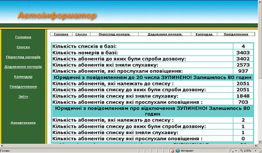
Слева находится панель ссылок, по которым вы сможете попасть на все другие страницы. Сверху и внизу страницы также находятся ссылки на эти страницы.
На главной странице отображается информация о базе и о результатах прозвонки, а также эта же информация по каждому списку.
Информация на главной странице автоматически обновляется каждую минуту.
Теперь о панели ссылок:
Страница списков
Нажав ссылку Списки Вы попадете на страницу списков:
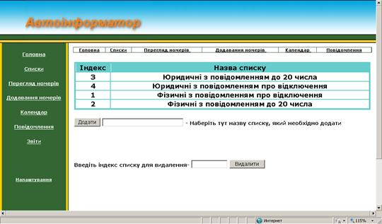
Здесь вы можете просматривать, добавлять и удалять списки. Для удаление списка нужно ввести номер, который вы видите слева от названия списка в поле ввода и нажать Видалити. Чтобы добавить список ввести название нового списка в поле возле кнопки Додати и нажать эту кнопку.
Страница Перегляд номерів
Следующая страница, это Перегляд номерів попасть на которую можно нажав соответствующую ссылку:
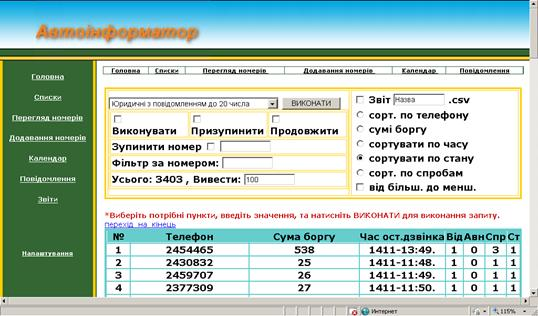
На этой странице вы можете просмотреть телефонные номера, которые есть в базе, а также управлять прозвонкой этих номеров. Кроме этого можно создавать файлы отчетов по определенным критериям. Сразу после входа на страницу в поле Усього отображается информация обо всех номерах базы и видны первые 100 из них. Для просмотра списка нужно выбрать соответствующий список, в поле возле надписи Вивести набрать максимальное количество номеров из списка, которое Вы хотите видеть на экране, и нажать кнопку ВИКОНАТИ. Если нужно запустить список на выполнение перед нажатием кнопки нужно выбрать флажок Виконувати, для остановки прозвонки данного списка, - выбрать Призупинити. Для продолжения выполнения, - Продовжити. Разница между Виконувати и Продовжити в том, что при установке Виконувати будут обзваниватся все номера, включая тех, кто ответил, не недослушал сообщение, а при Продовжити только те, которые не снимали трубки. Для исключения из прозвонки одного номера, - выбрать флажок Зупинити номер ввести нужный номер в поле рядом (в таком виде, в котором он записан в базе). После этих действий нужно нажать ВИКОНАТИ, чтобы действия выполнились. Также можно найти в базе номер или диапазон номеров, введя часть номера в поле Фільтр за номером, если это не начало номера, - перед числом нужно поставить символ %. Кнопки справа позволят сортировать видимую на экране таблицу в порядке возрастания или уменьшения выбранных параметров. Также можно сохранить результаты запроса в файл csv, выбрав флажок Звіт и ввести возле него нужное имя файла (по умолчанию – Назва).
Страница Додавання номерів
Следующее окно – “Додавання номерів”:
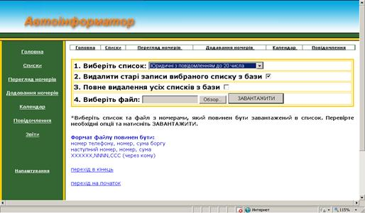
Здесь вы можете добавлять новые списки номеров в базу. Для этого нужно выбрать список, в который вы хотите добавить номера, если вам нужно удалить старые номера из этого списка ничего не меняйте, если нужно добавить к старому, - снимите галочку возле пункта «Видалити старі записи вибраного списку з бази». И если вы хотите предварительно очистить базу и сбросить индексы, выберите «Повне видалення усіх списків з бази».
После того, как вы выбрали список и (при необходимости) отметили нужные флажки нужно нажать кнопку Обзор возле надписи «Виберіть файл» и выбрать файл со списком телефонов и сумами долгов и нажать ЗАВАНТАЖИТИ.
Формат файла должен быть следующим:
Номер телефона(7 цифр), Сумма долга, Любые цифры или буквы
Номер телефона(7 цифр), Сумма долга, Любые цифры или буквы
Номер телефона(7 цифр), Сумма долга, Любые цифры или буквы
Например:
2301010,210.35,
3244444,230.50,12345
Обе записи правильные, так как распознается только первый номер и сумма.
После успешной загрузки номеров, которая может продолжатся несколько секунд, вы увидите следующее:
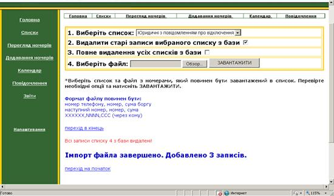
Или
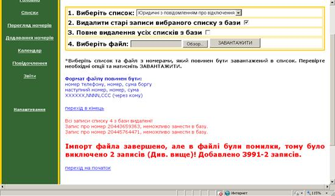
В последнем случае в записях были ошибки (номера 20443659363 и 20445764471 слишком з большим числом цифр, поэтому были не загружены) При этом все нормальные записи были добавлены в базу (всего – 3991-2=2989 записей).
Страница Календарь
Следующая страница – календарь:
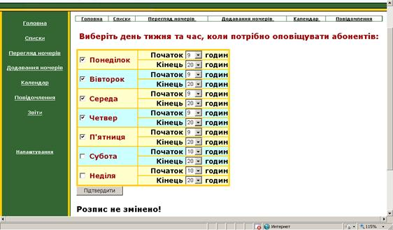
На этой странице выбираются дни недели и время начала и конца обзвона абонентов в эти дни после изменения нажать Підтвердити.
Страница Повідомлення
Далее, - страница «Повідомлення»:
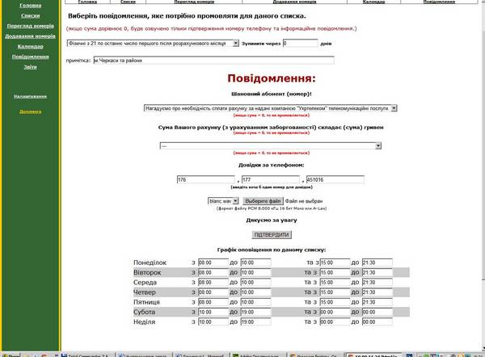
На этой странице нужно выбрать список, а затем сообщения и параметры, которые мы хотим прикрепить к данному списку. Если к списку уже прикреплены сообщения, то при выборе списка они выбираются автоматически и нужно только изменить необходимые (например, месяц и количество дней обзвона). Прозвонка останавливается после истечения срока указанного в «Зупинити через___днів» (Количество дней может быть дробным, например - 1.5 - это значит, сегодня до конца дня и завтра до конца дня, т.е. 36 часов)
Внизу, - перед «Дякуємо за увагу» выбирается или вводится информационное сообщение, которое произносится по окончанию сообщения о долге, или, если сумма равна 0, то произносится только информационное сообщение. По умолчанию – это blanc.wav – пустое сообщение. Для добавления своего сообщения нужно нажать кнопку Обзор и выбрать файл со своим сообщением. Файл должен быть в формате PCM 8 кГц, 16 бит, моно. Создать его можно с помощью программы Windows - звукозапись (Пуск => Все программы => Стандартные => Развлечения => Звукозапись)
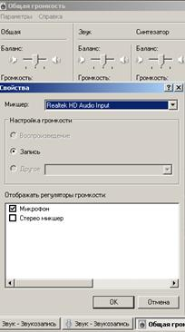Предварительно выставляем усиление микрофона – в настройках громкости (Двойной щелчок на регуляторе громкости) - Параметры => Свойства, выбираем устройство, где есть запись, устанавливаем громкость микрофона. (В дополнительный параметрах может быть еще усиление).
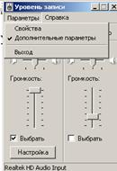
В звукозаписи нажимаем запись, произносим сообщение и нажимаем стоп. Для новой попытки – Файл => Создать.
После записи выбираем – Файл => Сохранить как,
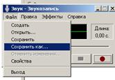
Нажимаем кнопку снизу Изменить и выбираем формат РСМ 8,000 кГц; 16 бит; Моно (как показано ниже). Нажимаем ОК, вводим имя файла и сохраняем.
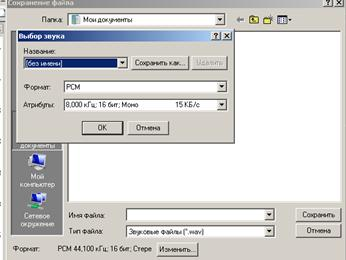
Теперь это сообщение можно загрузить в АСОА.
Также на этой станице находится календарь прозвонки для даного списка, нужно ввести время работы прозвонки для этого списка в выбраные дни недели.
Страница Звіти
На странице «Звіти» располагаются ссылки на отчеты, которые были созданы на странице «Перегляд номерів».
Страница Налаштування
И, последняя страница, - «Налаштування»:
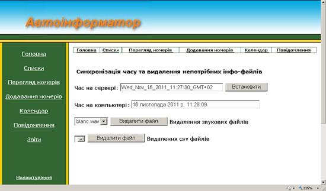
На этой странице вы можете устанавливать время на сервере и удалять ненужные файлы с сервера. Время на сервере синхронизируется с времерем на вашем компьютере, поэтому, прежде чем нажимать кнопку установки времени проверьте время на компьютере.
Добавление списка номеров при уже существующих и настроенных списках
- Открыть страницу «Додавання номерів»
- Выбрать список.
- Нажать «Обзор» и выбрать файл со списком
- Нажать «ЗАВАНТАЖИТИ».
- Открыть страницу «Повідомлення».
- Выбрать список.
- Ввести количество дней оповещения в поле «Зупинити через____днів».
- В поле после «"Укртелеком" повідомляє, що станом на 1» Выбрать месяц.
- Нажать «Підтвердити», предварительно просмотрев все ли введено правильно.